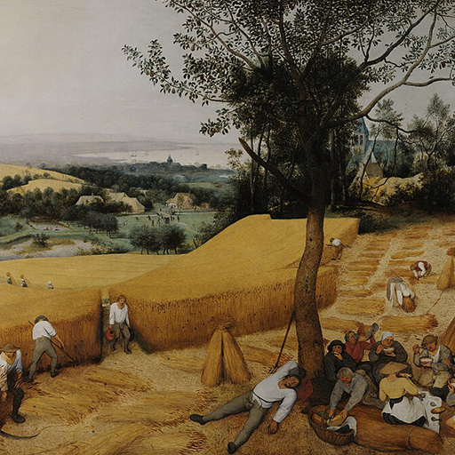

Hexagram 26 – Daxu: Deep Reserve
Upper: Mountain (☶) · Lower: Heaven (☰)

Core Meaning
This is a period for building strength, knowledge, and capacity. Do not rush to prove what you can do. Deepen your skills and prepare well so you can act fully when the timing is right.
“I build strength patiently and wait until I am ready to use it well.”
Blessing
May this quiet period strengthen you for the moment when your preparation can fully unfold.
Guidance by Life Area
Love
Trust needs time to deepen. Build shared experience and understand each other’s values before rushing into major promises.
Build shared experience and trust:
- Do not rush major commitments.
- Learn each other’s values and goals.
Career
Use this period to deepen your expertise, close skill gaps, and widen your perspective. Preparation now becomes leverage later.
Deepen your expertise while you have room:
- Build real examples and experience.
- Prepare before the larger opportunity arrives.
Health
Treat health as long-term maintenance. Build habits in food, movement, and sleep that you can actually sustain.
Build habits you can sustain:
- Treat your body as a long-term asset.
- Respect its limits.
Finances
This is a time to build capital and knowledge, not chase high returns. More reserves give you more options later.
Keep building capital instead of chasing returns:
- Improve your financial knowledge.
- Preserve room for future opportunities.
Relationships
Do not focus only on expanding your network. Invest in a few important relationships and let shared experience build trust.
Invest in a few important relationships:
- Build trust through shared experience.
- Let closeness develop over time.